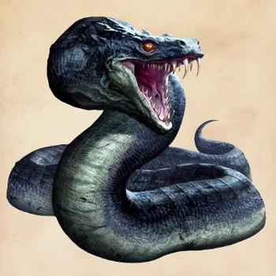

| Características | Descripción |
|---|---|
| Origen | Cirene, Libia |
| Tamaño | Desde los 10 a 20 Metros de largo |
| Apariencia | Cabeza de gallo, cuerpo de sapo, cola de serpiente. Piel escamosa, verde brillante |
| Forma de vida | Vive en el desierto que crea al romper piedras y quemar el pasto, exhalando fuego, secando las plantas y envenenando las aguas |

¿Deseas ver la galeria?
Ver imagenesDetalles
Sus colmillos tienen un veneno mortífero que solo puede ser curado con las lágrimas de fénix.
Además, su piel es similar a la de un dragón y puede repeler hechizos. El basilisco es
capaz de destruir objetos y es considerado una de las pocas especies capaces de destruir un Horrocrux (Harry Potter).
Su debilidad mortal es el canto del gallo y solo puede ser controlado por aquellos que hablan pársel.
El basilisco vive en el desierto que él mismo crea al romper piedras y quemar el pasto. Esto sucede ya que el
Basilisco exhala fuego, seca las plantas y envenena las aguas.
Según Plinio el Viejo en su Naturalis Historia, el
basilisco era oriundo de Cirene, y no medía más de 20 metros de longitud. También el
basilisco, fasilisco, culebrón o athrathrao llegó a ser parte de la mitología chilota. Posiblemente su origen
se deba a la unión del mito del Basilisco de la mitología griega, y del Colo Colo de la mitología mapuche.